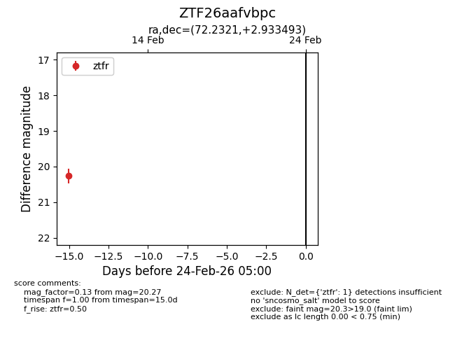
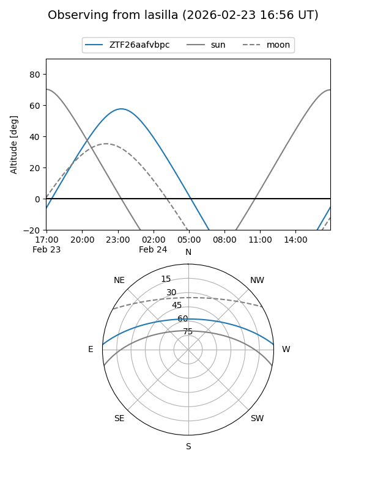
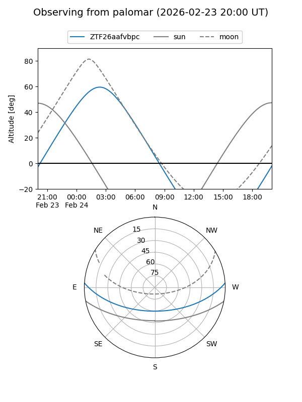

ZTF26aafvbpc
Target ZTF26aafvbpc at 2026-02-24 09:08
Aliases and brokers:
FINK: link
Lasair: link
ALeRCE: link
alt names
ZTF26aafvbpc (ztf,fink_ztf)
Coordinates:
equatorial (ra, dec) = 72.2321,+2.93349
equatorial (HMS+DMS) = 04:48:55.71,+02:56:00.57
galactic (l, b) = (195.0334,-25.43434)
Flags:
Photometry:
last ztfr=20.27
1 ztfr detections
Lightcurve

Visibility


Additional plots